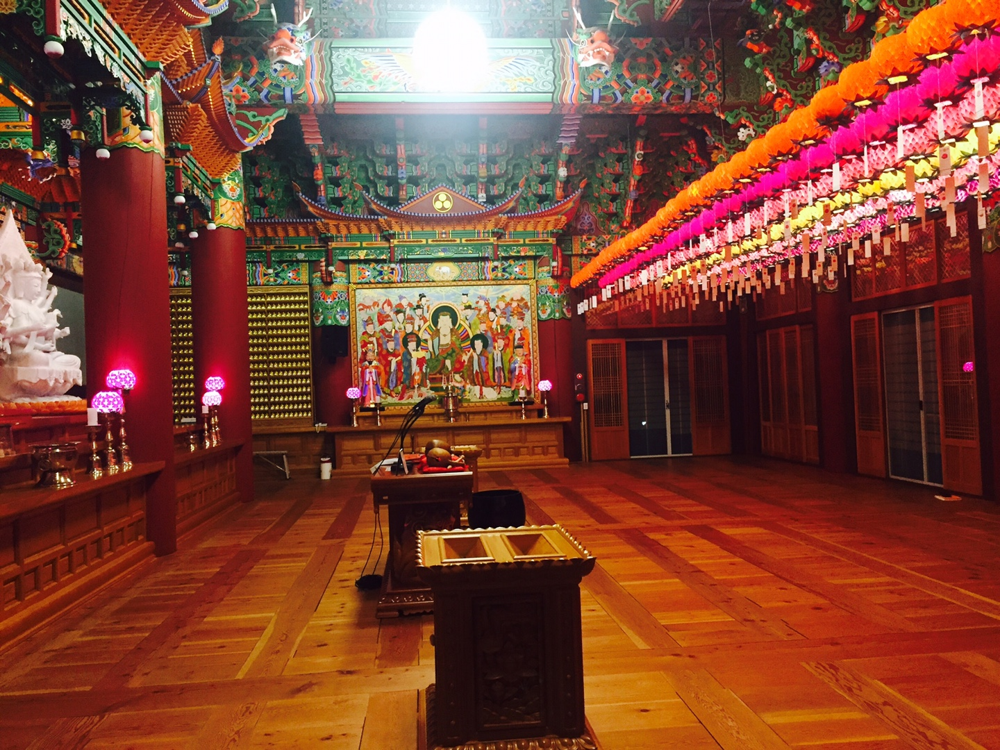
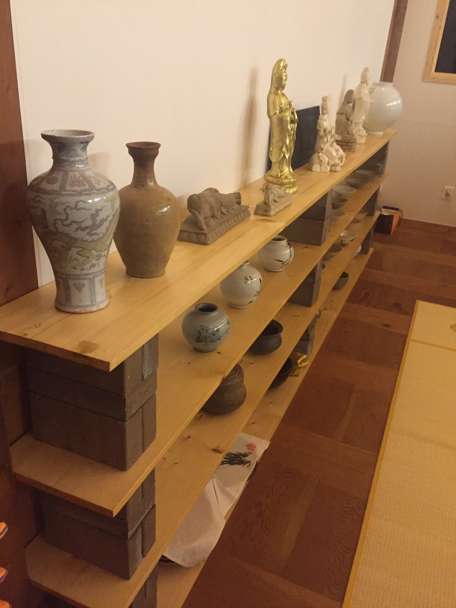
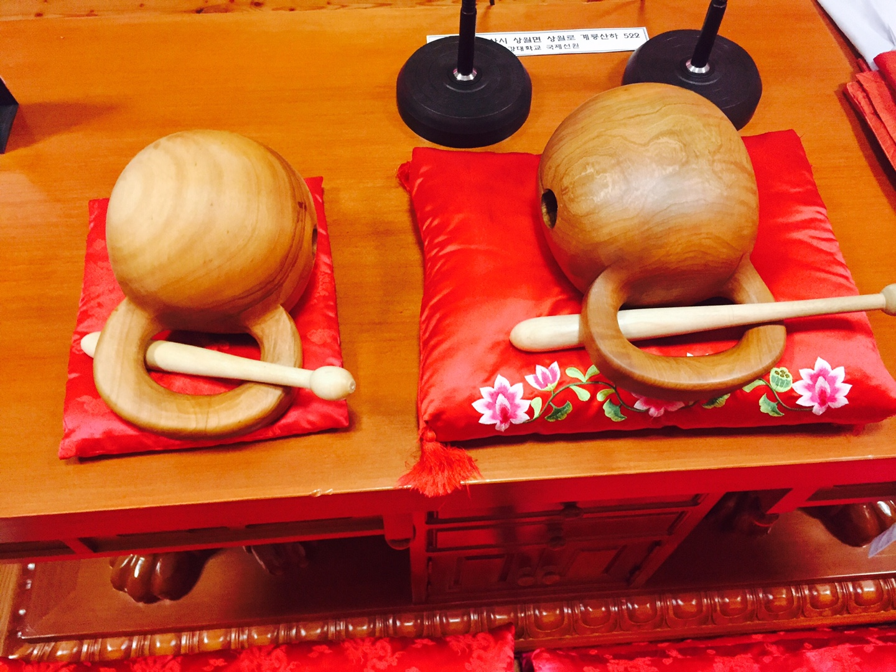
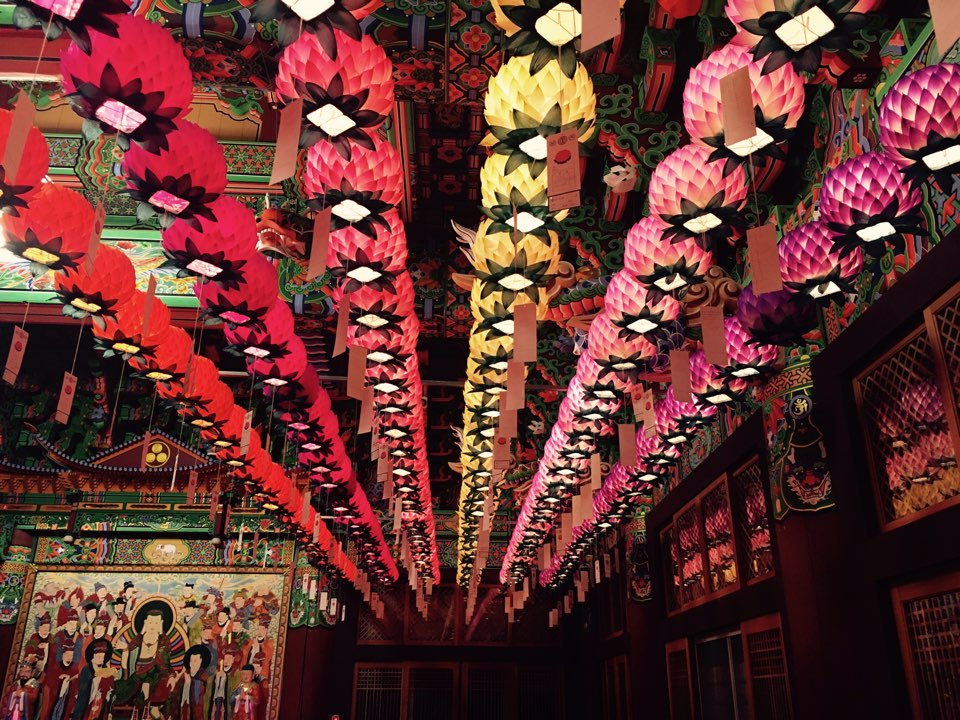
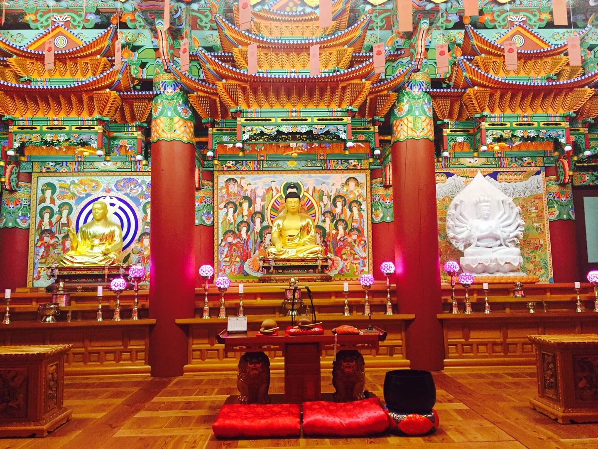
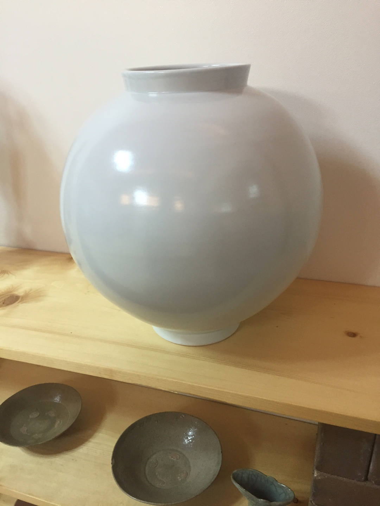
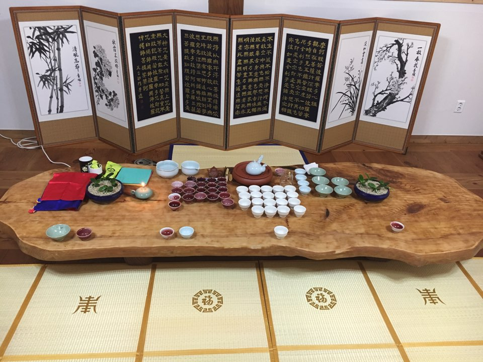

HOME
천태종
법당소개
불상들소개
p School
연등축제
Login
법당사진
국제선원의 법당사진입니다 클릭하시면 더 크게 볼 수 있습니다
문예관
지관당
대불보전
손님이 오시면서 차를 마시는 곳이고 항아리와 여백의 미를지닌 벽도있어서 한국의 전통을 느낄 수있는 곳입니다.
법당안에 달아놓은 연등입니다. 금강대학교 학생들의 소망과 함꼐 달아놓은 연등이 법당안을 환하게 밝히고 있습니다.
 스님이 직접 모으신 도자기들입니다. 스님께서는 이것을 통해 한국 전통 문화를 많이 알리려합니다.

법당예절 소개
경건한 마음으로 정숙한 행동을 합니다.
항상 발 뒤꿈치를 들고 소리나지 않게 걸어야합니다.
다른 불자가 기도할 때는 그앞으로 지나다지 않도록 합니다.
초나 향이 먼저 꽂힌 것이 있으면 그대로 두고 자신이 가져온 것은 불단위에 놓습니다.
법당 갤러리




Previous
Next
 손님이 오시면서 차를 마시는 곳이고 항아리와 여백의 미를지닌 벽도있어서 한국의 전통을 느낄 수있는 곳입니다.
손님이 오시면서 차를 마시는 곳이고 항아리와 여백의 미를지닌 벽도있어서 한국의 전통을 느낄 수있는 곳입니다.